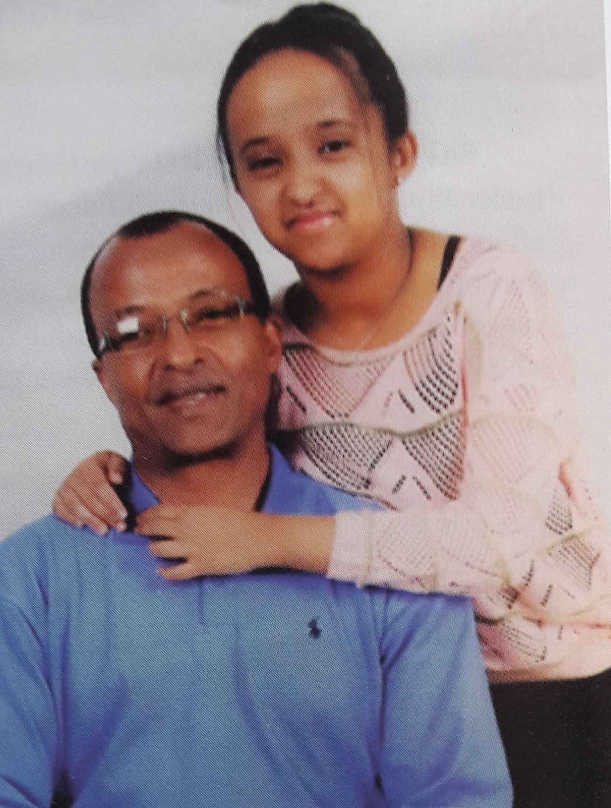
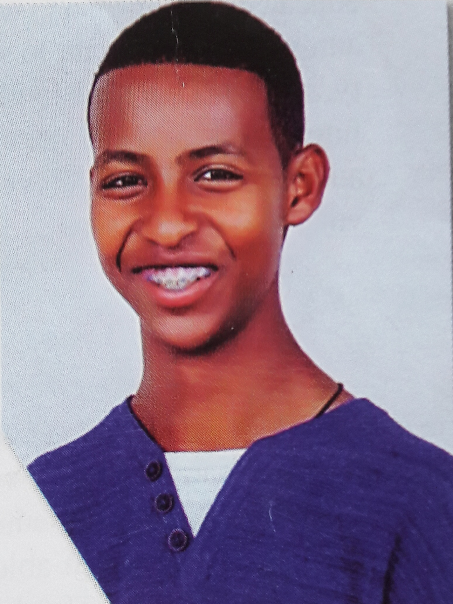
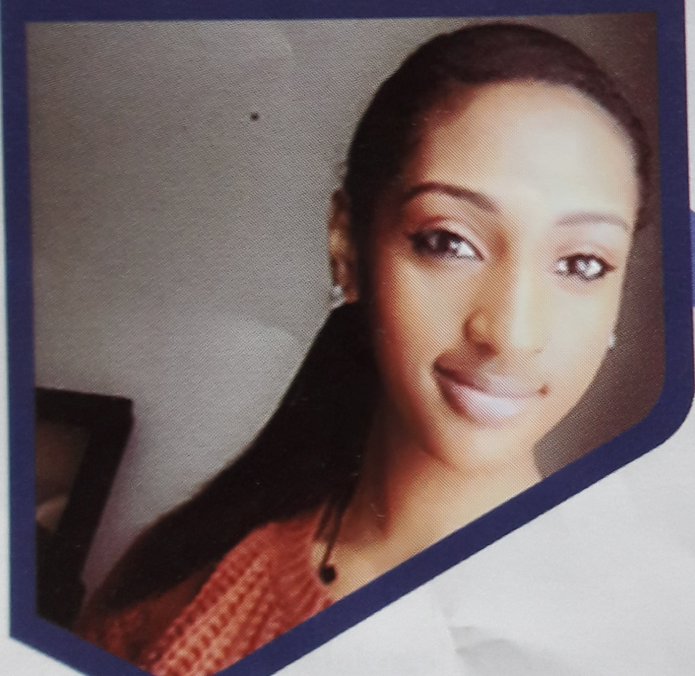
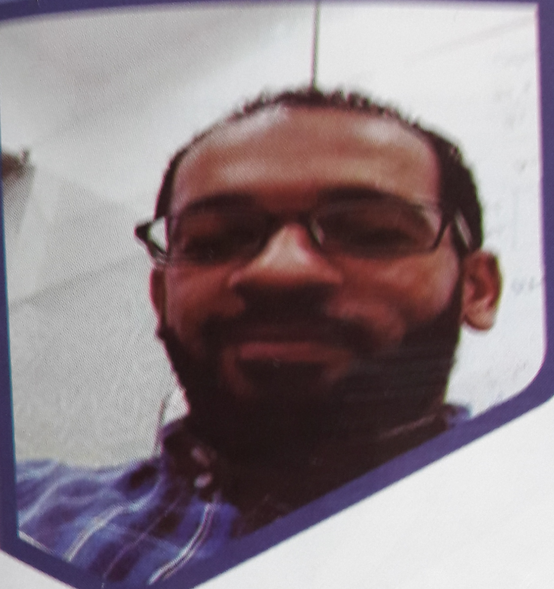

Parents' View
"Institution such as SOT have made incredible investments in our youth for the past two decades. It has invested today for our tomorrow leaders."Ambassador Fitsum Arega(Parent)
 "My son,Leul who is currently Grade 10 student, joined SOT at Grade 9. Our fear as a parent was because he was new for the school and joined new students who already built friendship, it might effect his learning capacity. But we are thankful to his classmates, teachers & the School administration for supporting, and encouraging him to adapt the new environment and learn with focus."Mr.Leul Wasie(Parent)
"My son,Leul who is currently Grade 10 student, joined SOT at Grade 9. Our fear as a parent was because he was new for the school and joined new students who already built friendship, it might effect his learning capacity. But we are thankful to his classmates, teachers & the School administration for supporting, and encouraging him to adapt the new environment and learn with focus."Mr.Leul Wasie(Parent)

"I have sent my children to SOT starting from Pre-KG & my son Eyasu is currently a second year student in a university & my daughter Barkot is a Grade 10 student. Through out those acadimic years I have been impressed by the School system of Continuous follow up & assessment, which have been a way of following the family to participate in the acadimic development and Student's status. Thank you and God bless the School administration and teachers."Mr.Amdemichael Menkir(Parent)
Students' View
"I have been attending in SOT for the past 13 years.The thing which made SOT unique is the teaching mechanism with hard working teachers & school administrators. The school has helped me to be disciplined, reasonable, hard worker & self reliant person. I intended to continue my education here till 12 grade. I wish you all the best!"Nathnael Kebede(10-B)

"I joined SOT when I was 4 years old. since then I have meliorated both in acadimic & disciplinary performances. I can say that my life in sot has made me responsible and prudent. I have an unforgettable experience.Happy 25th Anniversary! "Kidus Yoseph(10-A)
"My time in SOT has been nothing but joy. It has carried me to find my passions and helped me to pursue them. In SOT learning has never really been boring. The SOT community has been like a big family & the place has been like a second home to us. I am proud to to tell the school has shaped us to be responsible young adults. I wish I would have more time to spend in this school. Happy Anniversary! "Dina Seid(12-B)
Alumni Annotations
"The amount of work and effort that I have been taught to dedicate through out my school years has put me at an advantage."Lidya Beyene(class of 2017)
"I was able to make life long friends with endless memories. Regardless of where life took us all we show commited respect and a sense of family love to our fellow SOT Alumni's. I would like to take this opportunity to salute & thank all the ones that are abroad and back home.It's not easy but I see you all & wish you all the best!"Nuela Elias(Class of 2013)

"My experience in SOT has molded & equipped meto think critically and also to relentlessly pursue my goals till they are achieved, my earlyyears in SOT where cherishable moments; our school created a vibe of belongness and an aura of a family away from home. I consider myself to be blessed to have studied and graduated from SOT."Billen Ibrahim Mohammednur(Class of 2001/2002)